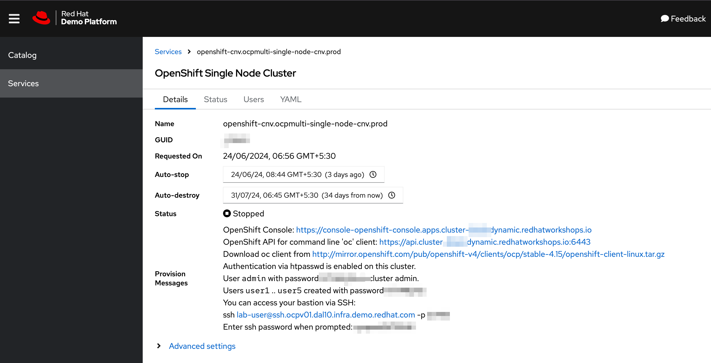
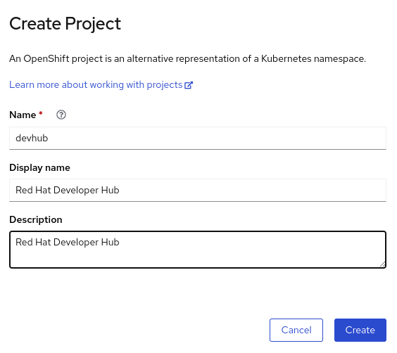
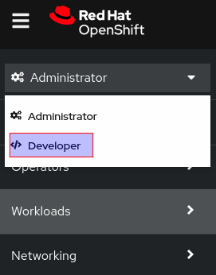
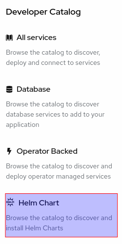
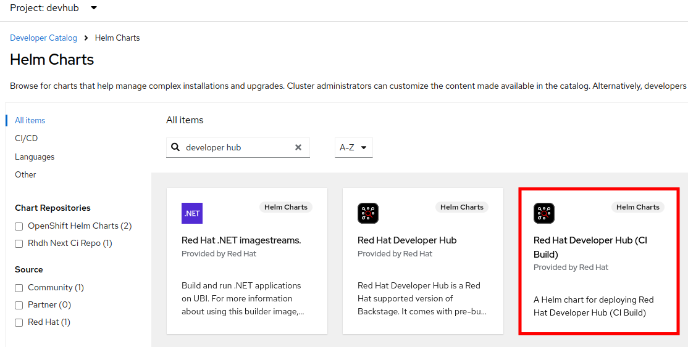
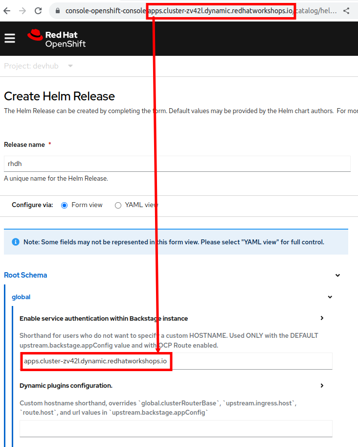
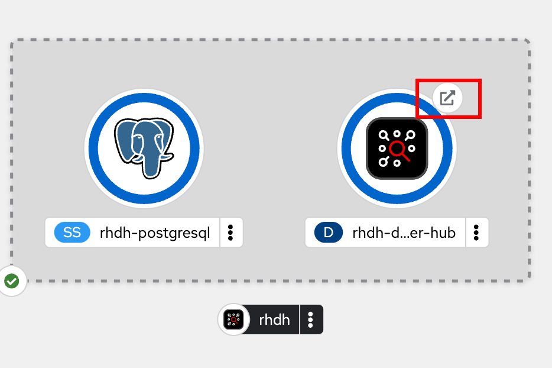
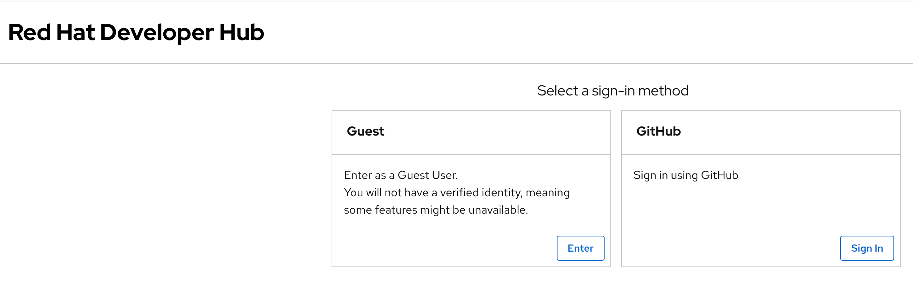
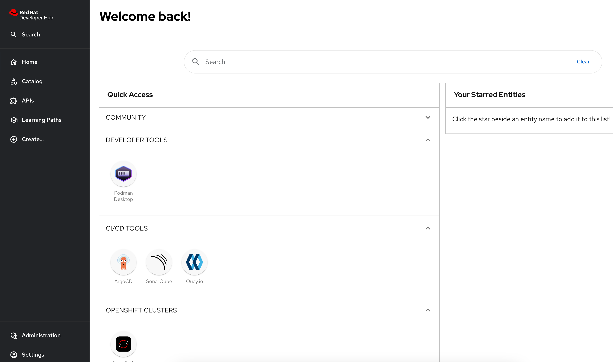

Red Hat Developer Hub Installation using Helm Charts
Red Hat builds and ships RHDH as a container image that is based on the Red Hat Enterprise Linux Universal Base Image (RHEL UBI).
There are several ways to install RHDH on OpenShift. This section covers installation using Helm charts. The next section covers installation using the RHDH Operator from OperatorHub.
Installation Using Helm Charts
The Red Hat Developer Hub helm chart is available in the Helm Catalog in Openshift, and on ArtifactHUB (A repository of Helm Charts).
A short refresher on how to work with Helm Charts on OpenShift is here.
The source code, templates, and the values.yaml file for the helm chart are available here for inspection.
The chart contains an opinionated default configuration of Backstage with a pre-integrated set of useful plugins, and it also uses a PostgreSQL database to persist the configuration state of RHDH.
Lab: Installation using Helm Charts
Pre-requisites
-
Order the OpenShift Single Node Cluster catalog item from Red Hat Demo Platform (RHDP). It should take approximately an hour for the classroom to be fully provisioned. You will receive an email with the details on how to access the OpenShift cluster. Verify that you can log in to the OpenShift web console as a cluster administrator.
Create a Project for RHDH
-
Log in to your OpenShift web console as the cluster administrator user (usually username is
admin). The username and password details for your OpenShift cluster are accessible in the RHDPServicesdashboard. You should have also received an email with the details of your OpenShift cluster.Figure 1. RHDP OpenShift Cluster DetailsYou can install the RHDH Helm chart as a regular, non-cluster administrator user, but this is not recommended. Many organizations have strict policies on who can install operators and charts in the OpenShift cluster.
-
Click on
Home > Projects(Ensure you are in theAdministratorperspective of the OpenShift console). ClickCreate Project, and then create a new OpenShift project nameddevhub.Figure 2. Create a new OpenShift Project
Install the RHDH Helm Chart
-
Create a chart repo for installing RHDH v.14 by executing the following command:
$ oc apply -f https://github.com/rhdh-bot/openshift-helm-charts/raw/redhat-developer-hub-1.4-123-CI/installation/rhdh-next-ci-repo.yaml helmchartrepository.helm.openshift.io/rhdh-next-ci-repo created -
Switch to the
Developerperspective in the OpenShift console and select thedevhubproject.Figure 3. Switch to the Developer Perspective -
Click
+Addin the left side navigation bar of theDeveloperperspective, and then selectHelm ChartFigure 4. Add Helm Chart -
Search for
"developer hub"in the search field on this page, and then select theRed Hat Developer Hubchart.Figure 5. Search for RHDH Helm Chart -
In the
Red Hat Developer Hubchart page, clickCreate. You will see theCreate Helm Releasepage with some fields that need to be edited.-
Change the
Release Nametorhdh. Ensure that the latest helm chart is selected in theChart versiondrop-down (As of Jun 2024, latest RHDH version is 1.4). -
Expand
Root Schema > globaland change the first field value fromapps.example.comto the wildcard domain name of your OpenShift cluster. In RHDP, it is in the formatapps.cluster-<guid>.dynamic.redhatworkshops.io, where<guid>is unique to your provisioned OpenShift cluster. -
The final screen should look like the following:
Figure 6. Edit Helm Chart Details -
Click
Createto deploy the helm chart.
-
-
Wait for 10-15 minutes while the helm chart is deployed. The
PostgreSQLandRed Hat Developer Hubpods should be fully started (dark blue circles around the icons). Click theOpen URLlink to access Red Hat Developer Hub.Figure 7. RHDH Topology View -
You should now see the Red Hat Developer Hub log in page.
Figure 8. RHDH Log in Page -
Click
Enterin theGuestcard to log in as a guest user. You will see a warning message pop up with the textFailed to sign in as a guest using the auth backend. Do you want to fallback to the legacy guest token?. ClickYesto log in as a guest user. You will configure RHDH to authenticate against GitHub and other identity providers in later chapters of this course.Figure 9. Log in as a guest userYou have now successfully installed Red Hat Developer Hub on your OpenShift cluster.
Installation using Helm CLI
Download the helm and oc CLI tools from the OpenShift web console by clicking the "?" icon on the top right navigation bar. Uncompress the archive files, and then copy the oc and helm binaries for your platform to the system path (usually /usr/local/bin on UNIX systems).
CLI Install Steps
-
Use curl to download the installation script and make it executable:
$ curl -sSLO https://raw.githubusercontent.com/rhdh-bot/openshift-helm-charts/redhat-developer-hub-1.4-123-CI/installation/install.sh && chmod +x install.sh -
Execute the installation script by running the script with the mentioned parameters:
$ ./install.sh 1.4-123-CI --namespace rhdh-1-4-123-ci --chartrepo Now using project "rhdh-1-4-123-ci" on server "https://api.cluster-zv42l.dynamic.redhatworkshops.io:6443". You can add applications to this project with the 'new-app' command. For example, try: oc new-app ruby~https://github.com/sclorg/ruby-ex.git to build a new example application in Ruby. Or use kubectl to deploy a simple Kubernetes application: kubectl create deployment hello-node --image=gcr.io/hello-minikube-zero-install/hello-node helmchartrepository.helm.openshift.io/rhdh-next-ci-repo unchanged Release "redhat-developer-hub" does not exist. Installing it now. NAME: redhat-developer-hub LAST DEPLOYED: Wed Dec 18 17:24:28 2024 NAMESPACE: rhdh-1-4-123-ci STATUS: deployed REVISION: 1 Release "redhat-developer-hub" has been upgraded. Happy Helming! NAME: redhat-developer-hub LAST DEPLOYED: Wed Dec 18 17:24:57 2024 NAMESPACE: rhdh-1-4-123-ci STATUS: deployed REVISION: 2 Once deployed, Developer Hub 1.4-123-CI will be available at https://redhat-developer-hub-rhdh-1-4-123-ci.apps.cluster-<guid>.dynamic.redhatworkshops.io -
Wait for 10-15 minutes while the helm chart is installed. Verify that the redhat-developer-hub and redhat-developer-hub-postgresql pods are in Running state.
$ oc get pods NAME READY STATUS RESTARTS AGE redhat-developer-hub-67644fd55d-lxm4d 1/1 Running 0 11m redhat-developer-hub-postgresql-0 1/1 Running 0 11m
-
Fetch the OpenShift route for RHDH and open the URL in a browser to navigate to the RHDH home page.
$ oc get route \ redhat-developer-hub \ --output jsonpath={.spec.host} redhat-developer-hub-rhdh-1-4-123-ci.apps.cluster-<guid>.dynamic.redhatworkshops.ioyogita
RHDH PostgreSQL Database
|
The default installation of RHDH (for both Helm Charts and Operator based installs) deploys a single PostgreSQL 15 database pod. This is a potential single point of failure and could prevent RHDH from being highly available. You should follow the installation instructions and install the default single instance PostgreSQL to complete the install. You can then configure the RHDH container to integrate with an external PostgreSQL database instance using the instructions provided in the product documentation at Configuring an external PostgreSQL instance using the Helm Chart. |
Installation Troubleshooting
The following are some problems you could see during installation, and the potential fix for them.
-
Problem: The
rhdh-developer-hubpod is stuck in aCrashLoopBackOfferror with the following seen in the logs:Loaded config from app-config-from-configmap.yaml, env ... 2023-07-24T19:44:46.223Z auth info Configuring "database" as KeyStore provider type=plugin Backend failed to start up Error: Missing required config value at 'backend.database.client'Solution: This is happening because the configuration files are not being appropriately accessed by the RHDH container. You may have edited the helm chart values before installation, and one or more attributes are missing or configured incorrectly. It is recommended to keep the default values (except for the wildcard DNS name of the OpenShift cluster) during installation.
You can always edit and update the RHDH configuration after the installation is completed successfully.
-
Problem: I see the following error when installing the RHDH helm chart using the helm CLI:
Error: query: failed to query with labels: secrets is forbidden: User "system:anonymous" cannot list resource "secrets" in API group "" in the namespace "devhub"
Solution: Ensure that you are logged in to the OpenShift cluster as a cluster administrator before installing, removing or upgrading the RHDH helm chart. Also ensure that you are in the correct OpenShift project, so that the resources are created in it.